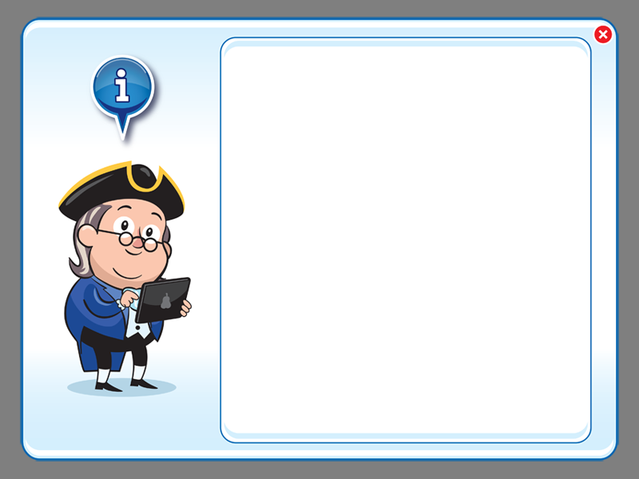
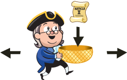
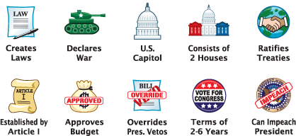
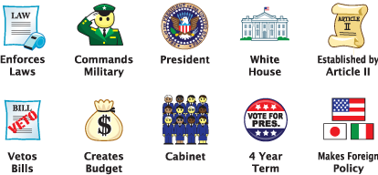
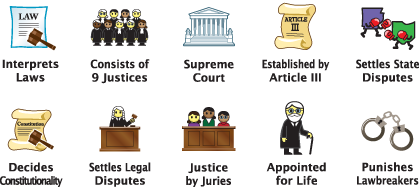

Using the information you've gained from the Learning Adventures, help Ben Franklin catch the icons that are unique to each branch of government.
Begin by selecting the branch of government that you'd like to play and Ben will travel to the building that represents that branch of government. When the game starts, icons from all branches of government will begin to fall from the sky. Your job is to help Ben catch the icons that belong to that branch of government. Catch a correct icon and Ben's basket will glow green and you'll be rewarded with a health bonus. But catch the wrong icon, and Ben's basket will glow red and he'll lose some health.
For every 10 icons you collect, you'll level up. But be careful! Ben will need to move quick as the icons will fall faster at higher levels. You'll also encounter Mystery Icons, which can have a positive or negative effect on both your health and time.

Legislative Icons

Executive Icons

Judicial Icons

Mystery Icon
Scoring
• 1st correct catch = +50 points, +5% health
• Correct catch = +25 points, +1% health
• Incorrect catch = -5 points, -10% health
• Drop = -5 % health
• Health Mystery Icon = -20%, -10%, +10%, +20%, +30%, or +50% health
Bonus Mode
When the user catches all 10 icons, the game goes into a "Bonus" mode, during which time the points are doubled for every correct icon that Ben catches.
Game Over
The game ends when Ben loses all of his health. When you've finished a game, you can click the "Learn More" button to find out which icons go with which branch of government. Click the "Play Again" button to choose another branch of government and try to beat your previous score.